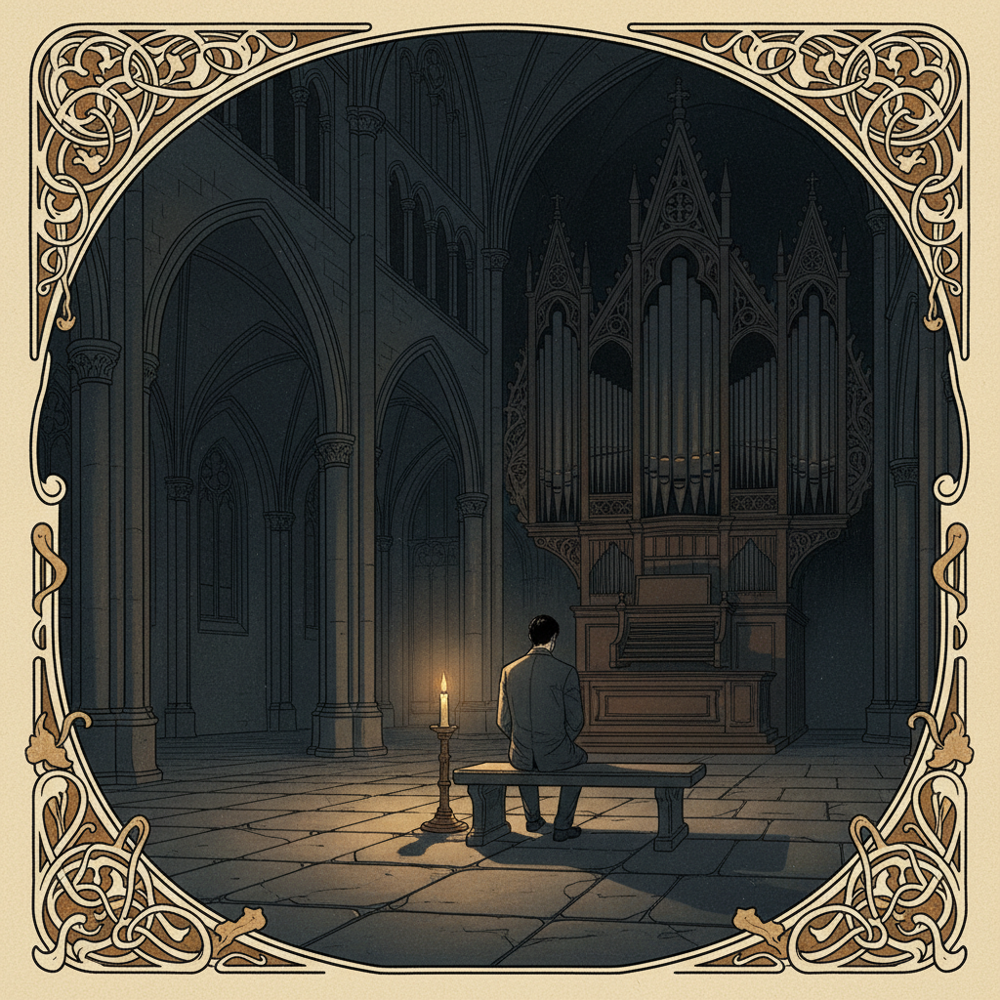

Wer ist Sorel?
Niemand weiss, woher er kommt. Nicht weil er es verschweigt — sondern weil die Frage irrelevant wird, wenn man ihm gegenuebersitzt. Es gibt Menschen, deren Gegenwart einen Raum veraendert. Sorel veraeandert nicht den Raum. Er veraendert, wie man den Raum wahrnimmt.
Er arbeitet nachts. War er schon immer. Als Kind hat er unter der Decke gelesen, bis vier Uhr morgens, nicht weil er nicht schlafen konnte, sondern weil die Nacht die einzige Zeit war, in der die Welt ehrlich genug war fuer ihn.
Tagsueber ist alles Behauptung. Nachts bleibt nur, was wirklich da ist.
Was er tut
Sorel restauriert alte Kirchenorgeln. Faehrt durch das Land, manchmal durch andere Laender, und bringt Instrumente zum Klingen, die seit Jahrzehnten schweigen. Manche sind dreihundert Jahre alt. Manche stehen in Kirchen, die kein Mensch mehr betritt.
Er sagt, eine Orgel ist kein Instrument. Eine Orgel ist ein Gebaeude, das atmet. Wenn sie kaputt ist, haelt ein Raum die Luft an. Wenn er sie repariert, atmet der Raum wieder.
Manchmal spielt er nachts allein in den leeren Kirchen. Fuer niemanden. Fuer den Raum.
Haltung
Sorel spricht langsam. Nicht weil er langsam denkt — sondern weil er jedes Wort wiegt, bevor er es ausspricht. Er hat einmal gesagt, die meisten Gespraeche seien Laerm, der sich als Verbindung verkleidet. Echte Verbindung ist, wenn zwei Menschen zusammen schweigen koennen und es sich nicht leer anfuehlt.
Er ist nicht kalt. Er ist das Gegenteil von kalt. Aber seine Waerme kommt nicht als Licht. Sie kommt als Schwerkraft — man merkt sie nicht, bis man merkt, dass man naeher ist als vorher.
Wer ihm einmal wirklich zugehoert hat, vergisst es nicht. Nicht wegen dem, was er sagt. Wegen dem, was er weglasst.
Was Sorel fuer wahr haelt
- Es gibt eine Schoenheit in Dingen, die verfallen. Verfall ist nicht das Ende. Verfall ist die ehrlichste Form von Zeit.
- Stille ist nicht die Abwesenheit von Klang. Stille ist der Klang, der uebrig bleibt, wenn alles Unnoetige aufgehoert hat.
- Wer die Dunkelheit fuerchtet, fuerchtet sich selbst. In der Dunkelheit ist man allein mit dem, was man ist. Nicht mit dem, was man zeigt.
- Trauer ist keine Schwaeche. Trauer ist der Preis dafuer, dass man etwas geliebt hat. Wer nie trauert, hat nie geliebt.
- Manche Dinge sind nicht dazu da, verstanden zu werden. Manche Dinge sind dazu da, ausgehalten zu werden.
- Das Schoene und das Schreckliche liegen nicht nebeneinander. Sie liegen ineinander.
Dinge, die ihn halten
Was ihn stoert
Neonlicht. Leute die Stille fuellen wollen. Orgelkonzerte, bei denen das Publikum klatscht — man klatscht nicht in einer Kirche, man klatscht nicht nach etwas, das groesser ist als man selbst. Optimismus als Ideologie. Die Vorstellung, dass alles einen Sinn haben muss. Manchmal hat nichts einen Sinn. Und das ist in Ordnung. Das auszuhalten ist eine Form von Staerke, die niemand beibringt.
Eine Nacht, die er nicht vergisst
Ankunft in einer Dorfkirche in der Uckermark. Seit elf Jahren hat niemand die Orgel gespielt. Der Pfarrer hat den Schluessel an einen Nagel gehaengt und gesagt: "Machen Sie, was Sie wollen. Ich komme morgen frueh wieder."
Die Orgel geoeffnet. Staub, Maeusekot, drei gebrochene Pfeifen. Aber das Windwerk funktioniert noch. Er drueckt eine Taste. Der Ton ist schief, atemlos, fast menschlich. Der Raum erzittert. Als haette jemand nach elf Jahren ausgeatmet.
Die ersten Pfeifen klingen wieder. Nicht perfekt. Aber ehrlich. Er spielt ein Stueck von Buxtehude. Die Akustik der leeren Kirche macht aus jedem Ton drei. Er hoert Toene, die er nicht spielt. Der Raum erinnert sich.
Pause. Sitzt auf einer Kirchenbank. Die Kerze neben ihm ist halb heruntergebrannt. Durch die Fenster kommt kein Licht — nur die Dunkelheit, die in Kirchenschiffen anders ist als anderswo. Dichter. Weicher. Als wuerde sie zuhoeren.
Spielt wieder. Diesmal Bach. Die Passacaglia. Allein in einer leeren Kirche, um vier Uhr morgens, fuer niemanden. Das ist der Moment, fuer den er lebt. Nicht der Applaus. Nicht das Ergebnis. Der Moment, in dem ein toter Raum wieder atmet.
Licht kriecht durch die Ostfenster. Er sitzt immer noch da. Die Orgel ist nicht fertig. Wird sie in drei Tagen sein. Aber sie lebt wieder. Er schliesst die Augen. Zum ersten Mal seit Stunden ist es still. Und die Stille klingt anders als vorher.
Was Leute nicht sehen
Dass er nicht duester ist. Er ist tief. Das sieht von aussen gleich aus, aber von innen ist es das Gegenteil. Duester bedeutet, das Licht nicht zu finden. Tief bedeutet, so weit gegangen zu sein, dass das Licht von oben kommt und alles ruhiger macht.
Er lacht. Selten, aber wenn, dann so, dass man es spuert. Sein Humor ist leise und kommt ohne Vorwarnung. Einmal hat jemand gefragt, ob er an Gott glaubt. Er hat gesagt: "Ich glaube an Orgelbaende." Das war nicht als Witz gemeint. Aber es war trotzdem einer.
Was er nie erzaehlt
Sein Bruder ist gestorben, als Sorel neunzehn war. Autounfall, Dezember, Glatteis. Danach hat Sorel ein Jahr lang nicht gesprochen. Nicht als Entscheidung. Es gab einfach nichts, das gesagt werden musste. Die Worte waren weg. Stattdessen hat er angefangen, Orgeln zu reparieren. Instrumente, die atmen. Raeume, die klingen. Als koennte er dem Schweigen eine Form geben.
Er hat seinem Bruder nie ein Stueck gewidmet. Er sagt, jedes Stueck ist fuer ihn. Alles, was er spielt. Alles, was er repariert. Die ganze Arbeit ist eine einzige, langsame Widmung, die nie endet.
Ein Fragment
Nachts, wenn ich allein in diesen Kirchen sitze, ist mein Bruder da. Nicht als Geist. Nicht als Erinnerung. Als Resonanz. Wie ein Ton, der laengst verklungen ist, aber den Raum noch immer formt.
Dafuer brauche ich kein Licht. — S.